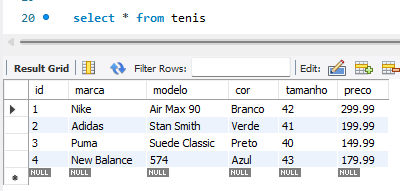

Um banco de dados é um sistema organizado de armazenamento e recuperação de informações. Ele permite armazenar, gerenciar e recuperar dados de forma eficiente.
É um software responsável por gerenciar e controlar o acesso ao banco de dados. Ele fornece uma interface para interagir com o banco de dados, permite a criação, recuperação, atualização e exclusão de dados, além de garantir a integridade, segurança e desempenho do sistema.
ACID é uma estrutura de banco de dados que garante seu correto funcionamento e impede que dados sejam corrompidos ou perdidos no processamento de transações. Sua aplicação é fundamental para que não haja dores de cabeça e nem lentidão na hora de lidar com inúmeros processos simultâneos em um banco de dados.
Seria a garantia de que a transação será feita totalmente ou não será feita. Nesse caso, a transação não é feita “pela metade”. Se por ventura uma operação da transação falhar, consequentemente, toda a transação falhará.
Seria a proteção da integridade dos dados. Ou seja, se um banco de dados fizer uma operação que não seja válida, o processo será impedido e retornará para o estado inicial do processo.
A capacidade de isolamento seria o fato de uma transação não “atrapalhar” a outra e ocorrer de forma isolada, garantindo que sejam feitas de forma individual.
Seria a preservação dos dados após as operações terem sido realizadas. Ou seja, uma vez que uma transação for efetuada, ela permanecerá dessa forma, mesmo que ocorram problemas graves no sistema, sem precisar de retrabalho.
É uma linguagem de consulta estruturada utilizada para manipular e consultar bancos de dados relacionais. O SQL permite realizar operações como seleção, inserção, atualização e exclusão de dados, além de definir a estrutura do banco de dados, como tabelas, índices e restrições.
As tabelas são estruturas fundamentais de armazenamento de dados em um banco de dados relacional. Elas consistem em linhas (registros) e colunas (campos). Os relacionamentos são estabelecidos entre tabelas usando chaves primárias e chaves estrangeiras para representar a associação entre os dados.
É o processo de projetar uma estrutura de banco de dados relacional para eliminar redundâncias e anomalias, garantindo a integridade dos dados e a eficiência das consultas. A normalização ajuda a otimizar a estrutura do banco de dados e evitar inconsistências
São estruturas auxiliares usadas para acelerar a recuperação de dados em um banco de dados. Eles melhoram o desempenho das consultas ao permitir que o sistema localize rapidamente os registros com base nos valores de colunas indexadas
O comando SELECT é usado para recuperar dados de uma tabela ou visualização em um banco de dados.
Exemplo de sintaxe: SELECT * FROM "nome da tabela". Este exemplo traz todos os campos da tabela, para consultar somente colunas desejadas inves de usar * insira o nome das colunas. Não se esqueça a separação é feita por virgula.Exemplo do comando
O comando INSERT é usado para adicionar novos registros a uma tabela em um banco de dados.
Exemplo de sintaxe: INSERT INTO "nome da tabela" (colunas que desejadas) VALUES (valores que deseja inserir na ordem das colunas colocas)Exemplo do comando
O comando DELETE é usado para remover registros de uma tabela em um banco de dados. Aviso muito cuidado ao fazer delete, sempre atribuir a sua query a clausula WHERE.
Exemplo de sintaxe: DELETE FROM "nome da tabela" WHERE "condicao_de_busca";Exemplo do comando, observação, realizei o delete do primeiro registro "NIKE"
O comando UPDATE é usado para modificar os valores de um ou mais campos em registros existentes de uma tabela em um banco de dados.
Exemplo de sintaxe: UPDATE "nome tabela" SET "nome coluna" = 'valor para o campo' WHERE id = 2. Exemplo do comando, obser que alterei a marca do registro com id = 2 para NIKE!O INNER JOIN é usado para combinar registros de duas ou mais tabelas com base em uma condição de igualdade, retornando apenas os registros que possuem correspondências em ambas as tabelas.
O LEFT JOIN é usado para combinar todos os registros da tabela da esquerda com os registros correspondentes da tabela da direita, com base em uma condição de igualdade. Ele também retorna os registros da tabela da esquerda que não possuem correspondências na tabela da direita.
O RIGHT JOIN é usado para combinar todos os registros da tabela da direita com os registros correspondentes da tabela da esquerda, com base em uma condição de igualdade. Ele também retorna os registros da tabela da direita que não possuem correspondências na tabela da esquerda.
O FULL JOIN é usado para combinar todos os registros de ambas as tabelas, independentemente de haver correspondência ou não. Ele retorna todos os registros da tabela da esquerda e da tabela da direita.